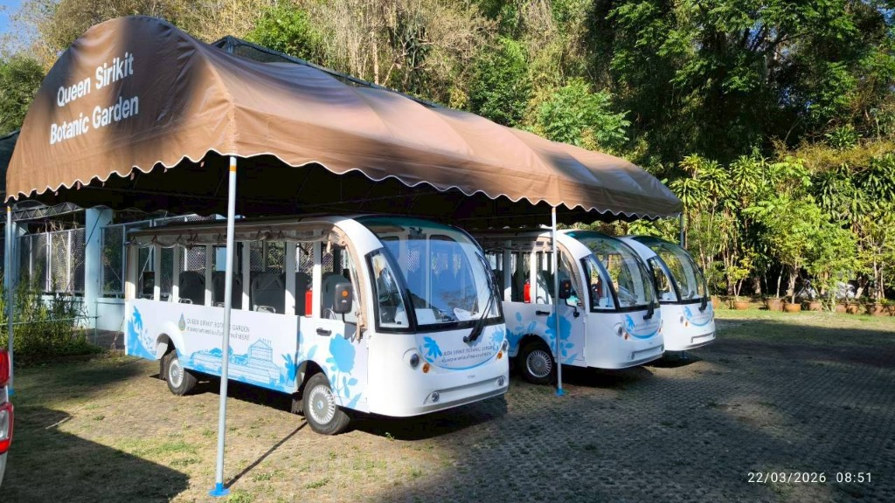
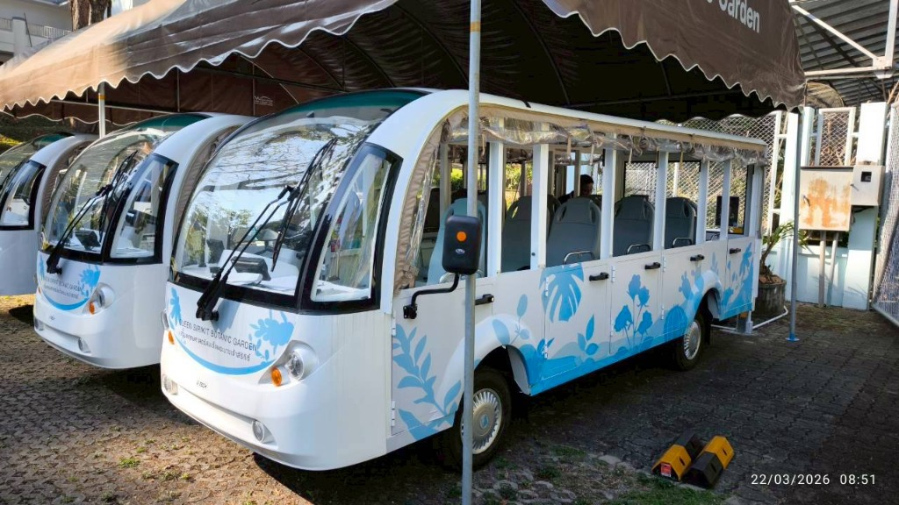
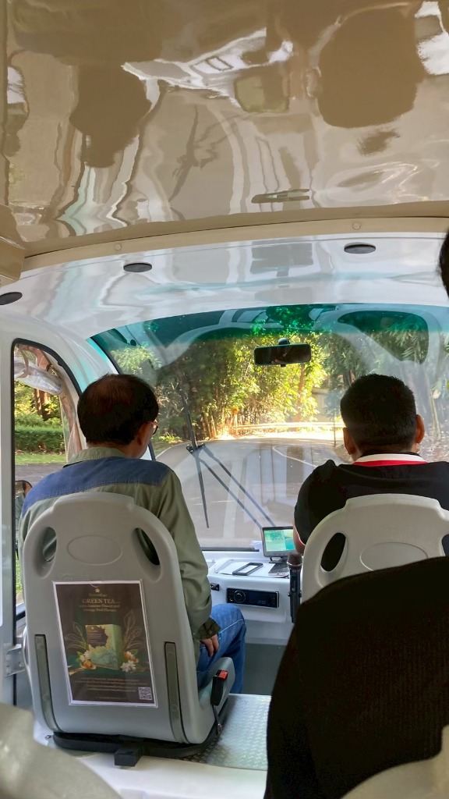
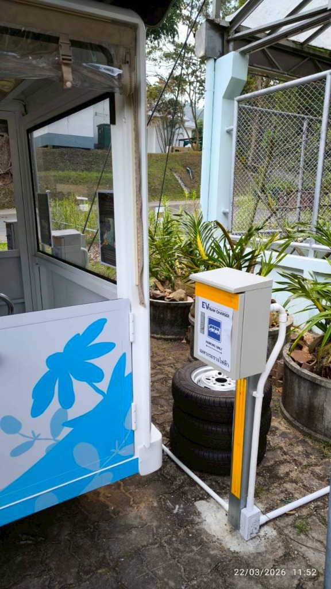

การผสานสองหัวใจสำคัญ: ยานยนต์ไฟฟ้า (EV 100%) พลังงานสะอาด ไร้ควัน ไร้เสียง ควบคู่กับ Smart Tourism Platform (e-Ticket, Live GPS Tracking, Smart Queue Balancing และ Real-time Analytics) สวนพฤกษศาสตร์สมเด็จพระนางเจ้าสิริกิติ์ จังหวัดเชียงใหม่

ความท้าทายในการบริหารจัดการและการให้บริการนักท่องเที่ยวในปัจจุบัน
มุ่งสู่สวนพฤกษศาสตร์อัจฉริยะ เป็นมิตรกับสิ่งแวดล้อม และยั่งยืน
วิเคราะห์ ออกแบบระบบฐานข้อมูล และสถาปัตยกรรมสารสนเทศรถนำเที่ยวไฟฟ้าเพื่อการบริหารจัดการที่มีประสิทธิภาพสูงสุด
ครอบคลุมทั้งนักท่องเที่ยว (Web/Mobile App), คนขับรถ (Driver App), จุดบริการ (Kiosk) และผู้บริหาร (Dashboard)
เชื่อมโยงเส้นทาง จุดท่องเที่ยว แนะนำพรรณไม้แบบ Geofences และจัดทำรายงานวิเคราะห์แบบเรียลไทม์

ปรับเปลี่ยนสู่รถพลังงานไฟฟ้า 100% เป็นมิตรต่อสิ่งแวดล้อมและพรรณไม้
นักท่องเที่ยวเข้าถึงข้อมูลสะดวกรวดเร็วผ่าน e-Ticket, Live Tracking และแจ้งเตือนคิว
ผู้บริหารมี Real-time Dashboard เห็นภาพรวมการเดินรถและความหนาแน่นทันที
โครงสร้างระบบเชื่อมโยงระหว่างผู้ใช้ ระบบประมวลผล IoT และฐานข้อมูลอย่างมีเสถียรภาพ
กระบวนการจำหน่ายตั๋ว ออกตั๋ว และการตรวจตั๋วขึ้นรถ 5 ขั้นตอนแบบไร้รอยต่อ
กระบวนการเชื่อมต่อระบบชำระเงิน ตรวจสอบความถูกต้องผ่าน Webhook Callback และความปลอดภัย
การติดตามพิกัด GPS อัตโนมัติ พร้อมการคำนวณเวลาถึงสถานีแบบ Dynamic ETA

Smart Queue Balancing ลดความแออัด พร้อมระบบแจ้งเตือนแบบเรียลไทม์
ยกระดับการท่องเที่ยวเชิงเรียนรู้ด้วย Geofence Virtual Beacon Technology
คัดเลือกเทคโนโลยีระดับ Enterprise เพื่อความรวดเร็ว เสถียร และรองรับการขยายตัว
แบ่งการพัฒนาเป็น 3 ระยะอย่างเป็นระบบ เพื่อส่งมอบผลงานที่สมบูรณ์ตรงเวลา
การสร้างผลกระทบเชิงบวกอย่างครอบคลุมต่อทุกภาคส่วนที่เกี่ยวข้อง

โครงการพัฒนาระบบจัดการรถนำเที่ยวไฟฟ้า สวนพฤกษศาสตร์สมเด็จพระนางเจ้าสิริกิติ์ พร้อมเดินหน้าตามแผนงาน Phase 1 ทันที เพื่อส่งมอบระบบที่สมบูรณ์แบบ ทั้งการบริการ การบริหารจัดการ และความยั่งยืนในทุกมิติ